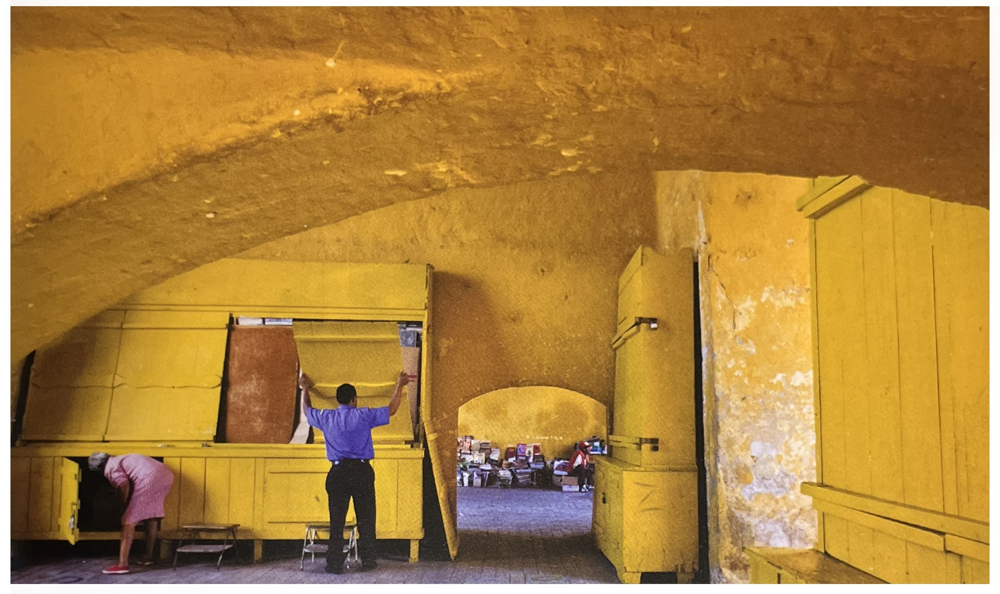

✓ 필름 시절에는 5:4 대형포맷(스튜디오 촬영의 주류),
정방형 포맷(원래 롤필름 포맷이며 Hasselblad에 의해서 유지되어 왔다).
7:6과 4:3(이것 역시 롤필름 포맷이며 4:3은 645 포맷으로 알려졌다),
그리고 파노라마 포맷인 12:6과 17:6, 거기에 35mm 프레임인 3:2 포맷도 있었다.
✓ 디지털 포맷들은 크든 작든 이제 원칙적으로 4:3과 3:2이며,
새로운 텔레비전의 표준인 16:9가 점점 인기를 얻어가고 있다.
✓ 프레임이 점점 확장될수록 세로로 사용하는 것은 점점 불편해 진다.
4:3은 간단히 3:4로 만들 수 있지만,
3:2는 2:3이 되어서 세로로 너무 길쭉한다는 느낌을 받게 된다.
그럼에도 35mm 카메라의 오랜 전통 때문에 2:3 세로 포맷은 잘
받아 들여지고 있으며, 구성에서 다소 흥미로운 기회들을 제공해 준다.
16:9 포맷은 세로로 사용하는 일이 거의 없다.

➪ 16:9 프레임 : 텔레비젼이 이런 와이드 스크린을 지향하는 추세를 따라 일부 디지털 카메라도 16:9 프레임 기능을 제공하고 있다. 구성에서는 이 포맷은 짧고 뚱뚱한 포맷보다 더 역동적이고 생동감이 있어 서, 우리가 사물을 보는 방식의 기본적인 ''수평선'과 일치한다. 세로 프레임으로는 사용하기 쉽지 않다는 점이 이 포맷의 한계다.
❍ 황금분할[1/p102]
✓ 황금분할은 실용적인 근거에서 효과가 있을 뿐 아니라,
원래 그 독특한 속성으로부터 유래한 강력한 종교적인 의미를
가지기 때문에 유지된다. 즉, 특수한 통일성이 종교예술에서
호소력을 준다는 것이다.
✓ 황금분할의 비율은 1:1.618이며, 퍼센트로는 62%와 38%이다.
✓ 황금분할에서는 큰 부분에 대한 작은 부분의 비율이 전체에
대한 큰 부분의 비율과 같다.
✓ 3:2 형태에서는 긴 측면은 짧은 측면보다 ½가 더 있고,
따라서 새로운 프레임은 다시 1/2가 확장된다.
즉, 3에서 4½이 된다. 그 결과는 2:3:4½ 즉, 4:6:9이다.
✓ 4:3 화면비율은 동일한 절차로 하면 약간 덜 긴 프레임을
만들어 낸다. 4:3 프레임의 긴 측면은 짧은 측면보다 ⅓이 더 길다.
따라서 전체 형태는 ⅓이 확장된 것이다. 결과는 3:4:5⅓,
즉, 9:12:16이 된다.

➪ 황금분할 : 큰 부분에 대한 작은 부분의 비율이 전체에 대한 큰 부분의 비율과 같다. 이 통일성 있는 관계가 바로 그 분할을 특별한 것으로 만들어 준다. 위 이미지들의 분할은 황금분할을 따른 것이며, 하나는 수평적분할 이며 또하는 수직적 분할이다.
[참고문헌]
[1] 사진가 마인드, ‘마이클 프리맨’지음, 김문호 옮김, 비즈앤비즈, 2011.10.25.
[2] 원하는 사진을 어떻게 찍는가, 김성민, 소울메이트, 2015. 2. 9.
....
....
....
....
....